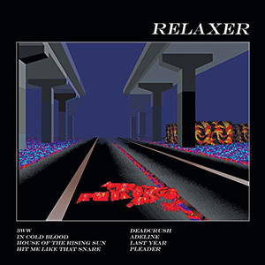

 Relaxer— третий студийный альбом, выпущен 2 июня 2017. Изначально релиз альбома был запланирован на 9 июня 2017-го, но группа позднее решила выпустить альбом на неделю раньше. Группа записала альбом RELAXER в Лондоне с продюсером Чарли Эндрю. Некоторые песни вошедшие в альбом, были сочинены в те года, когда участники группы учились в Лидском университете. «House of the Rising Sun» — это аранжированная традиционная народная мелодия с некоторыми изменениями текста, которые внесла группа. «3WW» и «Deadcrush» были записани при участии Элли Роуселл из Wolf Alice. Группа выпустила музыкальные клипы для «3WW», «In Cold Blood», и «Deadcrush». Группа также заручилась поддержкой японского художника Осаму Сато, который создал онлайн игру под впечатлением от игры на PS1 LSD Videogame, как часть промоушена для альбома Relaxer. Обложка альбома представляет собой скриншот игры Сато.
В декабре 2015 года, когда alt-J завершили свои финальные шоу в поддержку второго альбома This Is All Yours. По возвращению в Лондон, группа взяла свой первый перерыв от написания песен и гастролей. Во время перерыва ударник Том Грин выпустил свой сольный дебютный альбом High Anxiety 19 августа 2016, клавишник Гас Ангер-Гамильтон запустил свой поп-ап ресторан, вокалист Джо Ньюман использовал свой перерыв для того, чтобы смотреть фильмы. Позже группа собралась в и начала запись для альбома в августе 2016-го.
На Metacritic, Relaxer получил 65 баллов, оценка основывается на 27 обзорах. Лиза Райт из DIY высоко оценила альбом, заявив, что alt-J «создали, пожалуй, самую странную оригинальную нишу в современной музыке». Кайл Маллин из «Under the Radar» высоко оценил разнообразие альбома: Relaxer немного головокружительный и трудный для восприятия на первый взгляд, но вы сразу же будете очарованы и заинтригованы его уникальным сочетанием. И как только вы дадите ему еще несколько прослушиваний, многие из его разнообразных песен попадут в ваши уши как одни из лучших предложений этого года для инди-рока ».
В отрицательном обзоре Джейсон Грин из Pitchfork сказал: «Правда в том, что у alt-J никогда не было идентичности, на самом деле, кроме искаженной лирики Ньюмана и беспокойной, отвлеченной аранжировки их песен. RELAXER показывает нам, что остается после того, как эти причуды были набраны: некогда очень хорошие, совершенно чистые парни, которые не имеют ни малейшего представления, почему они стоят перед вами, и даже не представляют, что сказать ».